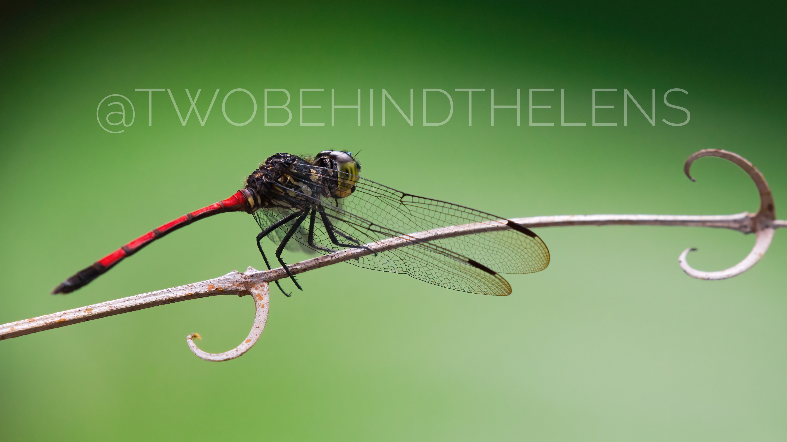
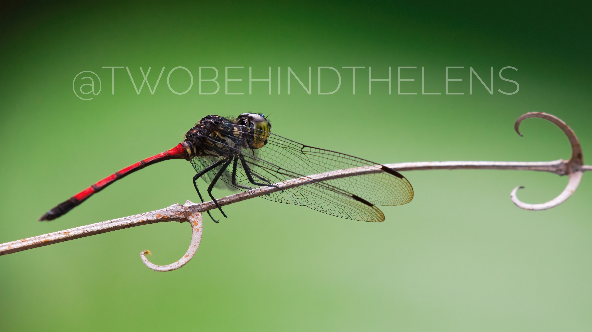
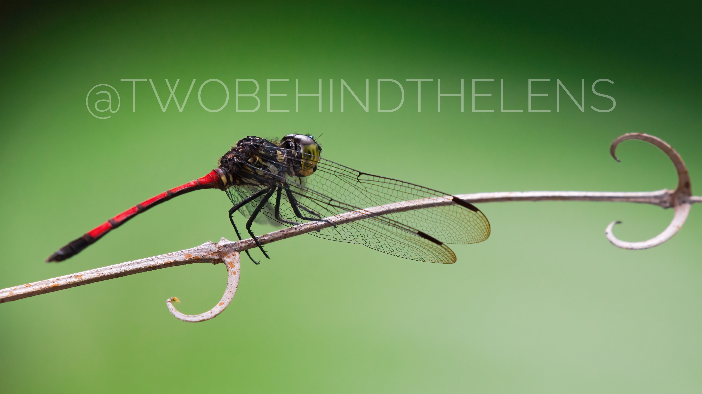

© Julia & Yang

We're Julia and Yang, a passionate wildlife photographer couple who loves to travel across
the world to photograph nature’s wildest moments.
Based in Sarawak, our work reflects our love
for the untamed beauty of the wild.
Through each image, we strive to be a voice for the voiceless, where most times photos speak what words can't.
Be part of the echo — follow our journey @twobehindthelens.
Browse our work below — all are available as prints.

Red-crowned Crane closeup
White-tailed Eagle in flight

Japanese Macaque closeup
Rough-scaled Sun Skink closeup

Green Crested Lizard closeup
Splendid Fairywren closeup
Red-crowned Crane pair
Steller's Sea Eagle closeup

Yezo Sika Deer pair

Eurasian Nuthatch
Steller's Sea Eagle mountain view

Cicada shell with spider

Red-crowned Crane duo

Japanese Macaque baby

Willow Tit

Willy Wagtail

Eurasian Tree Sparrow
Grenadier

Pacific Black Duck

Proboscis Monkey
Long-tailed Tit panoramic view

Long-tailed Tit
Ashy Tailorbird closeup
Email twobehindthelens@gmail.com
Instagram twobehindthelens